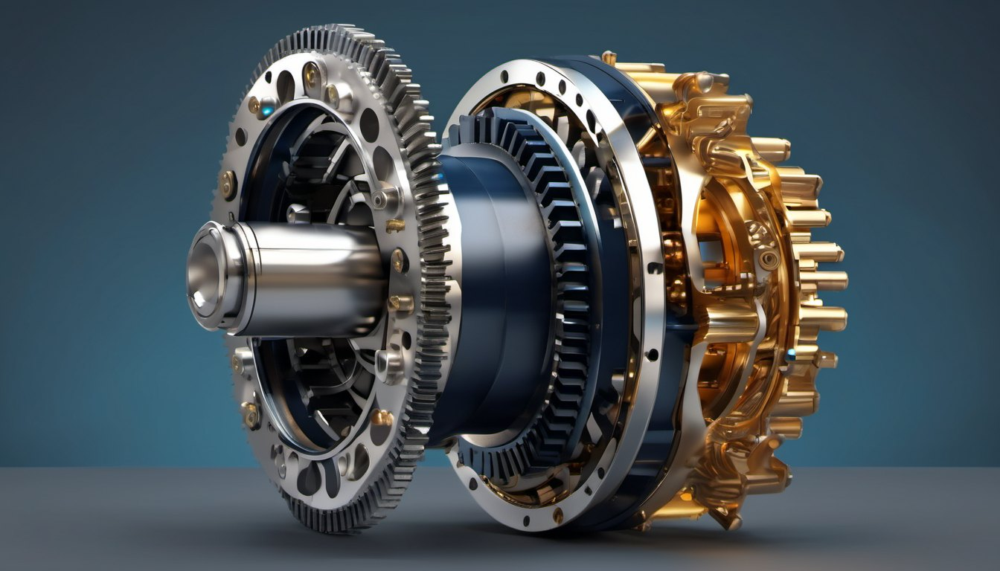
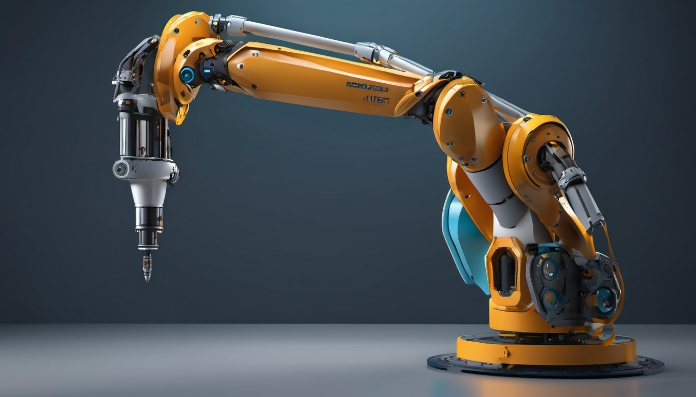
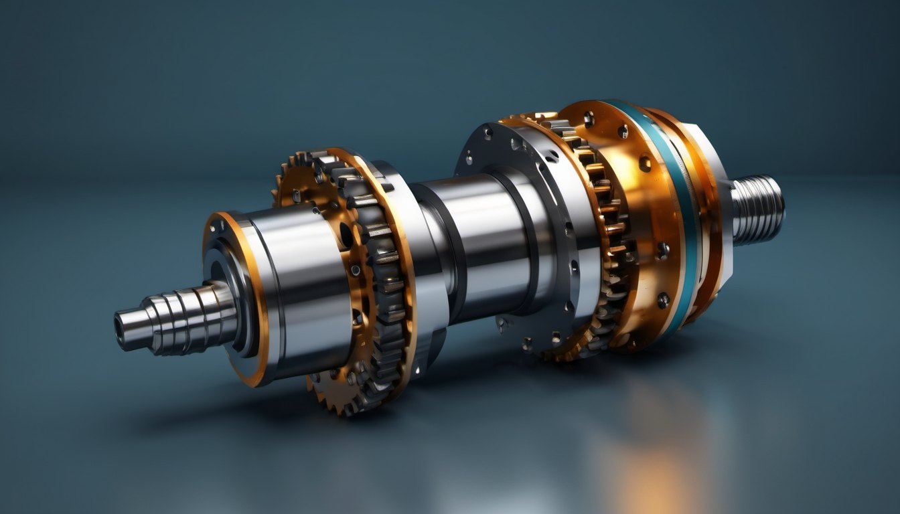
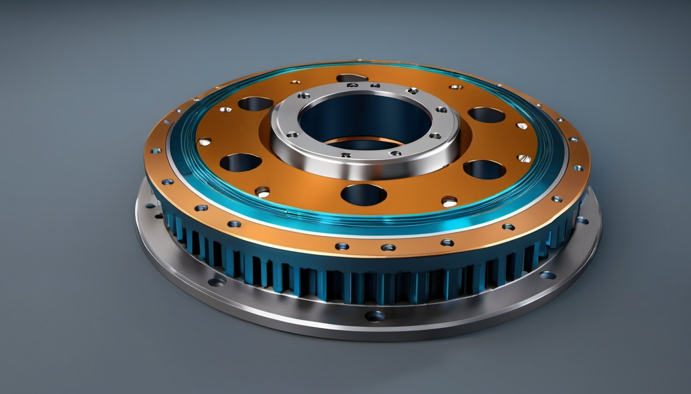

Четиризвенен механизъм
Манивела и люлка. Точка от свързващия лост описва сложна затворена траектория.
Факултет по индустриални технологии · Технически университет – София
Наука за движението, която стои зад всяка машина — от часовниковия механизъм до промишления робот.
Към атласа на механизмитеНачало на дисциплината в ТУ–София
Самостоятелна катедра
Научно-преподавателски състав
Задължителни и избираеми
§ 01 Катедрата
Катедрата по Теория на механизмите и машините учи инженерите да виждат движението в основата на всяка машина — да го описват, изчисляват и проектират. Така от 1945 година.
Катедрата дава на студентите знания за механичната същност на машините и развива тяхната инженерно-техническа култура и изобретателско мислене. Води 10 задължителни дисциплини, две от които в магистърски програми, и предлага две избираеми.
Преподавателите публикуват у нас и в чужбина, участват в международни проекти, работят по договори с фирми, създават патенти и изобретения. Много от разработките са внедрени в промишлеността с икономически и социален ефект.
§ 02 Атлас на механизмите
Всеки чертеж е кинематично точен: положението на звената се изчислява на всеки кадър, не е записана анимация.
Манивела и люлка. Точка от свързващия лост описва сложна затворена траектория.
Превръща въртене в праволинейно движение — основата на буталните машини.
Непрекъснатото въртене става прекъснато: четвърт оборот, пауза, четвърт оборот.
Профилът на гърбицата задава точния закон на движение на изпълнителното звено.
Слънчево колело, сателити и корона. При неподвижна корона u = 1 + z₃/z₁ ≈ 3,33.
Чисто хармонично движение от равномерно въртене на манивелата.
§ 03 Научноизследователска дейност
Проектиране на лостови, гърбични и зъбни механизми с желани кинематични и динамични свойства.

Манипулатори, паралелни структури и интелигентни задвижвания за съвременната автоматизация.

Уравновесяване, вибрации и преходни режими — за по-тихи, по-леки и по-надеждни машини.

Геометрия, якост и ефективност на зъбни, планетни и циклоидни предавки.

§ 04 Виртуална лаборатория
Променете дължините на звената и следете как се променя траекторията на точката от свързващия лост. Системата проверява условието на Грасхоф.
Принцип
Там, където идеята
става движение.
§ 05 Обучение
Десет задължителни дисциплини, две от които в магистърски програми, и две избираеми. Студентите развиват инженерно и изобретателско мислене чрез анализ, моделиране и проектиране.
Как се описва и измерва движението на механизмите.
Натоварвания, уравновесяване и поведение на машините в движение.
Синтез на механизми по зададени траектории и закони на движение.
Роботика, автоматизация и машиностроене — от модела до практиката.
Две дисциплини в магистърски програми за по-дълбоко навлизане в областта.
§ 06 История
Поставени са корените на дисциплината в техническото образование. Първият преподавател е проф. Михаил Константинов.
През юни катедрата се обособява като самостоятелно звено. Първи неин ръководител е проф. Михаил Константинов (1921–1991), признат за неин основател.
Петнадесет преподаватели, международни проекти и тясна връзка с индустрията.
§ 07 Ръководство
Ръководител на катедрата
Заместник-ръководител
В катедрата работят 15 преподаватели. Пълният състав е на официалната страница на ТУ–София.
§ 08 Контакти
Технически университет – София
Факултет по индустриални технологии
бул. „Св. Климент Охридски“ 8
1756 София, Блок 4